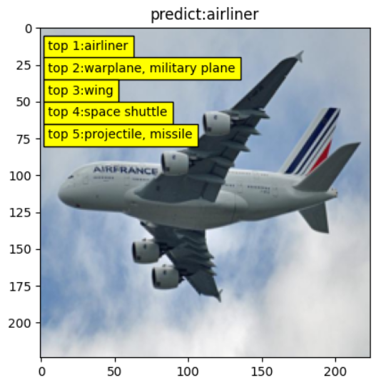
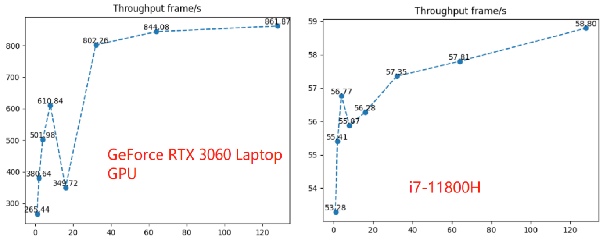
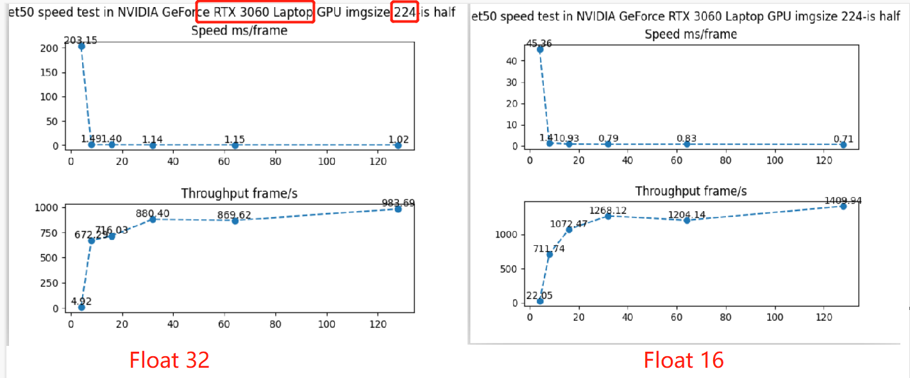

11.2 ONNXRuntime 简介与使用
前言
onnx是一个开放式的格式，它还需要放到推理框架（推理引擎）上运行才可以，支持运行onnx文件的框架有ONNX Rruntime、TensorRT、pytorch、TensorFlow等等。
在这里就介绍onnx自带的推理框架onnxruntime。
onnxruntime是onnx官方的推理框架，它与onnx库是完全两个东西，安装了onnx库并没有安装上onnxruntime，它需要额外安装。
onnxruntime分为cpu版和gpu版，两个版本的安装又分别是两个库，分别是 onnxruntime, onnxruntime-gpu
onnxruntime-gpu的安装，又要求cuda、cudnn版本的严格匹配，否则会无法运行！这里被坑了挺长时间，下面讲讲onnxruntime的安装。
onnxruntime 安装
对于cpu安装，可以直接pip install onnxruntime，对于gpu版本的安装，通常不能直接pip install onnxruntime-gpu，而是要设置指定版本，因为cuda和cudnn版本会限制onnxruntime的版本。
版本的对应关系如官网所示：https://onnxruntime.ai/docs/execution-providers/CUDA-ExecutionProvider.html#requirements
例如，cuda版本是11.4，且cudnn是8.2.2.26，则可以pip install onnxruntime-gpu==1.10.0 。如果不是，那就需要配置对应版本的cuda、cudnn了。
通常来说，系统上cuda和cudnn的安装比较麻烦，并且更换版本也不方便。这里推荐直接在python虚拟环境中安装指定版本的cuda, cudnn，这样不会与系统的cuda、cudnn冲突。
例如：
conda install cudatoolkit=11.3 -c pytorch -c conda-forge
conda install cudnn==8.2.1
pip install onnxruntime-gpu==1.14.1
PS：需要注意的是，onnxruntime和onnxruntime-gpu不可并存，装了onnxruntime-gpu，也是可以调用cpu的，这里建议把onnxruntime卸载，只保留onnxruntime-gpu即可。
onnxruntime 使用
onnxruntime 中使用onnx文件，只需要将其加载到InferenceSession中，然后调用InferenceSession.run()就可以完成推理。
相比于pytorch，不需要在代码中保留如何定义模型的的class，也不用加载权重了，这一切都存储在onnx的计算图中。
InferenceSession 的初始化细节如下所示
class InferenceSession(Session):
"""
This is the main class used to run a model.
"""
def __init__(self, path_or_bytes, sess_options=None, providers=None, provider_options=None, **kwargs):
"""
:param path_or_bytes: filename or serialized ONNX or ORT format model in a byte string
:param sess_options: session options
:param providers: Optional sequence of providers in order of decreasing
precedence. Values can either be provider names or tuples of
(provider name, options dict). If not provided, then all available
providers are used with the default precedence.
:param provider_options: Optional sequence of options dicts corresponding
to the providers listed in 'providers'.
在这里，需要关注的是providers，它的作用是指定可用的设备，如["CUDAExecutionProvider", "CPUExecutionProvider", "ROCMExecutionProvider"]。
ort_session_bs1 = ort.InferenceSession('resnet50_bs_1.onnx', providers=['CUDAExecutionProvider'])
inp = np.random.randn(1, 3, 224, 224).astype(np.float32)
output = model.run(['output'], {'input': inp})
完整的resnet50实现图像分类推理，参见配套代码，需要注意的是要与模型训练时的前处理、后处理保持一致。

onnxruntime 推理速度评估
为了观察batchsize对推理效率的影响，这里设计了三个模型的对比实验，分别是bs=1， bs=128, bs为动态时，从1到256的推理时延与吞吐量的对比。
通常说推理速度，只看一次推理的耗时是不足以反应模型在生产时的效率的，因为推理并行的存在，因此可以采用大的batchsize来提高单位时间内，处理样本的数量。
通常评估模型的推理的时间效率会将时延（latency）和吞吐量（throughout）一起观察。
这里简单介绍时延（latency）和吞吐量（throughout）的意义。
时延（latency）：通常用于评估用户需要等待多长时间，根据业务场景，需要针对性保障时延，约莫等于平时说的耗时。
吞吐量（throughout）：用于评估服务器一定时间内能处理的量，通常是为了提高单位时间内，能处理更多的用户请求。
时延和吞吐量通常是矛盾的，即想要高吞吐的时候，时延就会提高。
这个就像深夜的大排档，你到店里点一份炒河粉，需要等待多久？这取决于老板的策略是低延时，还是高吞吐。
- 低延时策略：来一个处理一个，尽快把你的一份河粉炒出来，需要3分钟。
- 高吞吐策略：稍微等等，等到3个炒河粉订单，一次性炒出来，等了3分钟，炒粉3分钟，总共6分钟，算下来，每分钟可以炒0.5份。而低时延策略的吞吐量显然低了，每分钟可以炒0.33份。
计算机的运行也是一样的，可以通过batchsize来权衡时延与吞吐量。
首先来看bs是动态的模型，将bs从1到256的效率变化，数据如表所示：
| bs=1 | 2 | 4 | 8 | 16 | 32 | 64 | 128 | 256 | |
|---|---|---|---|---|---|---|---|---|---|
| 时延ms | 3.7 | 5.2 | 7.7 | 12.9 | 45.4 | 39.1 | 75.9 | 150.3 | 7285.6 |
| 吞吐量 frame/s | 270 | 386 | 521 | 620 | 353 | 818 | 843 | 852 | 35 |
将吞吐量绘图如下图所示：

结论：
- 随着batchsize的增加，吞吐量逐步提高，在bs=128时，吞吐量增长平缓；
- cpu上推理，batchsize的增加，吞吐量差别不大，这也符合逻辑，毕竟cpu不是计算型处理器，无法批量处理大规模矩阵运算；
- 不定batchsize的模型与动态batchsize的模型，在相同batchsize下，效率并没有什么变化（注：由于变化没差别，表格中没有展示）；
- 在onnruntime有一些奇怪的bs，当bs=16，bs=256时，运行效率出现异常，详情看表格；
建议：模型上线前，实际评测一下模型不同输入时的效率，选择合适的batchsize，可以最大化服务器利用率。
在这里，补充一个pytorch下resnet50的推理评估数据，左图为float32， 右图为半精度float16。配套代码
可以看到：
- 半精度的吞吐量可以提高50%左右，时延能降低30%左右。
- 同样的，随着batchsize的增加，吞吐量逐步提高，在bs=128时，吞吐量几乎不变。

小结
本节介绍了onnx自带推理框架——onnxruntime的安装及使用，同时评估了resnet50模型在固定batch和动态batch下，以及不同batchsize时，推理的效率。
通过推理效率的评估，可以知道，batchsize到达一定的量后，吞吐量饱和，因此无需追求过大的batchsize，毕竟大的batchsize，时延会增加。
这里就有一个疑问，如何充分利用gpu资源？例如有一个计算密集型的场景，需要resnet50在24小时不间断的推理，根据上面得出来的理论，batchsize 128就可以了，gpu的显存只需要3GB左右，对于一张16G的T4而言，是否存在浪费呢？虽然gpu的利用率非常高。不知大家对此问题有什么看法？欢迎留言评论，一起探讨。